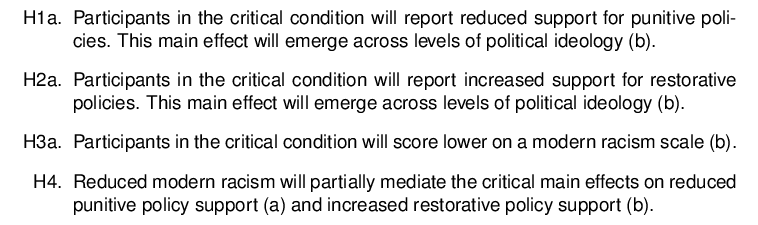
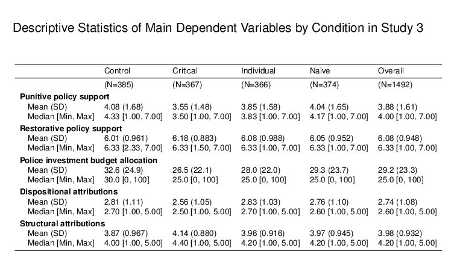

2 Study 3: Critical narrative effects on neighborhood violence attributions and a zero-sum policy budget allocations
Calls for adopting restorative approaches have increasingly emphasized the need to divest from policing to minimize harm against communities of color and criticized gun violence reduction plans for prioritizing police investments as the primary response to reducing gun violence (The White House, 2022). Although there is wide general support for restorative approaches, some policy experts stress that policing and imprisonment are still necessary levers for violence reduction, arguing that it incapacitates repeat offenders and reduces the likelihood of sparking a cycle of violent retribution from vigilante justice (Cook & Ludwig, 2019).
To better understand how people prioritize punitive versus restorative policies, Study 3 tests how critical narratives impact policy preferences when placed in a zero-sum budget allocation task about reducing CGV. Study 3 also further explores what is driving the conditional effect on policy support by examining causal attributions that do not invoke racial stereotypes. Study 3 tests whether a critical narrative on gun violence impacts policy preferences by changing whether readers attribute the cause of urban gun violence to dispositional factors (e.g., lack of work ethic, poor values) versus structural societal factors (e.g., fewer job opportunities and underfunded schools). Lastly, this study explores whether the critical narrative may impact behaviors by measuring participants’ willingness to share their assigned narrative on social media and their engagement with an online petition in support of a real, community-led campaign for restorative violence prevention. I ran a 4 x 1 between-subjects study (N = 1500) that compared the impact of reading a policy memo about “inner-city gun violence” through a critical narrative, individualized narrative, a naive anti-racist narrative, and a control.

2.1 Methods
2.1.1 Materials
The manipulations for Study 3 were presented as policy memos from the University of Chicago Harris School of Public Policy. The subject line read: “Gun Violence in America’s Poor Neighborhoods of Color” and included the same fake author name used in previous manipulations. See Study 3 Appendix for full materials.
2.1.1.1 Control narrative
The control memo only includes the introductory and closing paragraphs matched across conditions. The introductory paragraph explicitly sidesteps the dominant topics discussed concerning gun violence (i.e., gun control and mass shootings) to introduce the problem of gun violence in poor neighborhoods of color in major cities. The closing paragraphs present two policy approaches for reducing gun violence: a punitive approach (e.g., increased law enforcement, policing technology, harsher punishments) and a restorative approach (e.g., affordable housing regulations, funding public education, and local businesses).
2.1.1.2 Critical narrative
After the introductory paragraph, the critical memo questions why there exists a racial pattern in gun homicides and what can be done about it. It then explains how historical patterns of systemic racism contributed to this problem. This content of the present critical narrative differs slightly from the past iterations. I revised the paragraph discussing how policing targeted black communities for drug-related offenses to avoid triggering threats to conservative, white identities.
2.1.1.3 Individual narrative
The policy memo associated with the individual condition was adapted from the news article stimuli used in Study 1. The memo content describes the “psychological roots” of gun violence and provides a social analysis, a style similar to the critical policy memo. The memo included quotes about how young boys living in violent neighborhoods are socialized to “look tough and act fast” as a defensive mechanism. The memo focuses on the individual-level behavioral risk factors of youth gun violence without explaining the structural contributors to gun violence.
2.1.1.4 Naïve anti-racist narrative
The naïve memo amplifies the anti-racist tone of the naïve news article in Study 2 while continuing to leave out explanations of structural racism. This narrative was designed to prompt reactance against equity-oriented information by heavily signaling liberal values through the rise in “anti-racist” declarations. The naive memo follows the introduction with a paragraph citing how experts have identified systemic racism as a cause of racial inequities, including gun homicides. It includes quotes calling for legislators to “acknowledge the root causes of racial inequity…[and address] racist policies that have wreaked havoc on our Black and Latinx communities” (Chicago Mayoral Press Release, 2021). It also describes a growing consensus among officials, institutions, and professional organizations that have called for actions “to dismantle systemic racism, racial injustice, and police brutality” (AMA, 2020). The article includes a statement that invokes the importance of diversity, equity, and inclusion to properly understand gun violence” to amplify the anti-racist rhetoric (Everytown, 2021). Rather than include filler content that could introduce potential confounds, I did not attempt to match the length of the critical narrative.
After reading their respective memos, the survey asked participants to summarize the policy memo in their own words and presented bullet points of key points from the reading for reference. This open-ended question was used as an attention and manipulation check. No participants were excluded based on their summaries. After summarizing, they answered a series of survey questions. After answering the main survey questions described below, participants answered sociodemographic questions, were debriefed, and compensated through Prolific.
2.1.2 Measures
2.1.2.1 Violence prevention policy support
I asked participants to rate the extent to which they oppose or favor policies on a scale from 1 (strongly oppose) to 7 (strongly favor). Half of the items were punitive, and the other half were restorative.
Composite scores were created for each participant by averaging their responses to the items within the respective punitive and restorative policy categories.
The punitive items included items: more police on the street to arrest criminals, longer prison sentences and fewer opportunities for parole, an increase in the severity of criminal penalties and fines, invest in technology to identify and target criminals, investment in police-community programs to increase crime tips, and seize property from suspected gang members (a =
0.91). The restorative items included: more afterschool programs to keep at-risk youth out of trouble, more mental health services and socioemotional support programs, more economic development programs to create jobs, invest in community-led peacekeeping organizations, greater financial investment to revitalize poor neighborhoods, and more affordable housing options (a = 0.86).
2.1.2.2 Budget allocation task
I asked participants to allocate a percentage of a budget across two proposals: “Fund community-led programs to revitalize neighborhoods affected by gun violence by investing in jobs, affordable housing, mental health services, education, and crisis response teams,” and “Fund law enforcement programs such as officer training, gang intelligence units, and police patrols to get more violent criminals off of the streets in neighborhoods affected by gun violence.” The presentation order of the options was counterbalanced.
2.1.2.4 Petition engagement
I offered participants an opportunity to sign a petition that calls for Chicago to invest in community-led support structures as a violence prevention strategy. I asked participants to rate their interest in signing the petition on a scale of 1 = “definitely not” to 5 = “definitely yes.” Participants who rated a 3 or higher were then shown the link to sign the petition, which opened as a new tab in the background. On the next page, I then asked the group of participants who viewed the link to answer if they had signed the petition (1=“yes, I signed it,” 2=“not yet,” 3=“no, I do not plan to sign it.”)
2.1.2.5 Attributions for urban gun violence
Participants were asked to rate the importance of various factors in explaining gun violence on a scale of 1 (not at all an important factor) to 5 (extremely important factor). The list included six dispositional causes relating to personal character and invoked essentialism, such as “some people have a criminal nature” and “some people are just more aggressive.” They also included historically anti-Black stereotypes of individual deficiencies such as poor parenting, low moral character, and “cultures that glorify violence.” The structural causes included items that reflected societal institutions and socioeconomic landscape issues. These included recognition of structural racism, such as “a history of racial discrimination in policy-making,” “less access to good quality schools,” and “damage to families from mass incarceration.”
2.2 Results and Discussion



2.2.0.2 Zero-sum budget allocation task


Figure 2.1: Preferences for investing in policing versus communities in a zero-sum violence prevention budget allocation task by condition and political orientation.
2.2.0.3 Willingness to share policy memo


Figure 2.2: Attributions for gun violence in poor neighborhoods of color by condition.
2.2.0.5 Attributions for urban gun violence
2.2.0.5.1 Structural attributions.


Figure 2.3: Mediation diagrams of the critical effect on punitive policy support through structural attributions in Study 3.


Figure 2.4: Mediation plot of the critical effect on restorative policy support through structural attributions in Study 3.


Figure 2.5: Mediation plot of the critical effect on policy support through structural attributions in Study 3.
2.2.0.5.2 Dispositional attributions.


Figure 2.6: Mediation diagrams of the critical effect on punitive policy support through dispositional attributions in Study 3.


Figure 2.7: Mediation plot of the critical effect on restorative policy support through dispositional attributions in Study 3.


Figure 2.8: Mediation plot of the critical effect on policy support through dispositional attributions in Study 3.